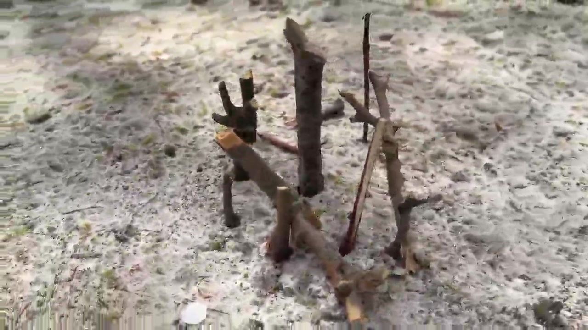

The Concept
Seeing the world through new eyes — starting with a twig.
Strength began with a chapter called "How to Look at a Twig" — a reading about how a twig can be seen through new eyes, and how in winter there is no real way to tell the age of a tree because all its twigs appear dead. This ambiguity was the hook. The chapter left enormous room for interpretation, and that open-endedness became the foundation of the entire project. The goal was not to illustrate the reading literally, but to use it as a lens for finding something deeper in the most ordinary of objects.
Casting my younger brother Harrison as the lead shaped the story immediately. His age demanded simplicity — and simplicity led to the idea of building a twig house. It was the perfect vehicle for endurance and persistence, capturing a child's relationship with nature in a way that felt honest rather than constructed.
Production
Documentary instincts, family cast, and a Saturday morning shoot.
Filming took place on a single Saturday morning, capturing the twig house being constructed from the ground up. The cinematography followed a deliberate rule: the same action from three separate distances, with Harrison placed on the side of the frame using the Rule of Thirds throughout. A steady 60fps frame rate and high shutter speed gave every clip a smooth, polished look — a style that would later be completely transformed.
The final twig house was assembled and filmed first, then used as a reference for Harrison to recreate the look of a half-built version. This reverse-engineering approach gave the film a natural continuity that would have been difficult to achieve shooting chronologically. Sand entered the project by accident — only after filming did it become clear how much of a visual presence it had accumulated. Rather than cutting around it, the sand was embraced and woven into the narrative as a chapter of its own.
Voice, Narration & Animation
From AI voice to British narrator — and hand-drawn animation in Scratch.
The narration concept came just before filming began. A script was written drawing heavy inspiration from the source reading, school textbooks, and nature documentaries — sources that share the same quality of describing ordinary things with extraordinary precision. The first attempt used an advanced text-to-speech British AI voice, but despite its technical quality it lacked human personality entirely. It was scrapped. My other brother Alex stepped in as narrator, delivering the lines in accent, and the film found its voice.
Aligning Alex's audio with the existing cut revealed gaps — shots were missing for several narrated lines. Rather than re-shoot, a new solution emerged: hand-drawn animations interspersed with the live-action footage. The drawings were animated in Scratch, a block-based programming tool used since 7th grade. Its simplicity made it the fastest path to the result needed, and the handmade quality of the drawings reinforced the tactile, nature-documentary aesthetic the film was already building.
The VHS Decision
The finishing touch that changed everything.
Near the end of production, with a logo screen and end card nearly complete, a single idea reframed the entire film. Inspired by a year of watching VHS Horror Videos on YouTube — modern productions that overlay the retro VHS aesthetic onto unsettling footage to create a feeling of unease — it became clear that Strength was already most of the way there. The stylized logo, the nature documentary structure, the absence of any modern technology in frame — all of it aligned perfectly with the VHS format.
A vintage filter was applied to the entire project, 4:3 bars included. A custom boot-up screen and fictional production company logo — Quartz Productions — were created in Scratch to complete the illusion. The mechanical coldness of VHS against the warmth of nature created exactly the tension the project needed. Both the VHS and original versions were exported to clearly demonstrate the technical scope of the work.
The only setback: no prior research had been done on converting video to actual VHS format. A DVD/VHS hybrid player was needed but unavailable for a full week, and without a capture card, the final VHS recording was made by filming the TV screen directly with a tripod. It was a frustrating workaround — but one that added authenticity to the analog grain of the result.
Reflection
What the project proved about following an idea wherever it leads.
Strength grew in directions that were never planned at the outset. Sand became a chapter. A British AI voice became a brother. Missing shots became hand-drawn animation. A near-finished cut became a VHS artifact. Each problem opened a door that made the film better than the original plan would have produced. The lesson was about staying open to what a project wants to become, rather than holding rigidly to what it was supposed to be. Seen through new eyes — whether those eyes are examining a twig or watching an old tape — everything looks different.